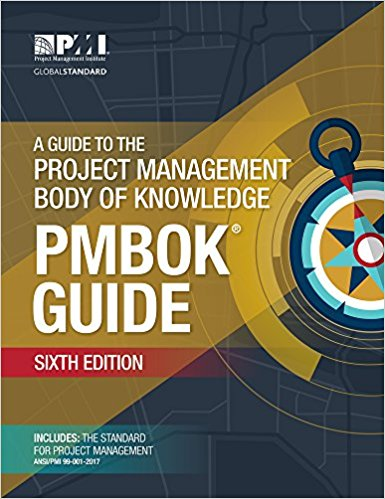

|
 |
PMBOK ® Project Management Book of Knowledgebest practices in project management:Section 4 Project Integration Management Section 5 Scope Management Section 6 Schedule Management Section 7 Cost Management Section 8 Quality Management Section 9 Project Resource Management 9.4 Develop the team. The process of improving competencies and the interaction between team members and the general environment of the team in order to achieve better project performance 9.5 Manage the team. It is the process that consists of monitoring the performance of team members, providing feedback, solving problems and managing changes in the team in order to optimize the project4 The process of improving competencies, interaction among team members, and the overall team environment to achieve better project performance Section 10 Communications Management Section 11 Risk Management Section 12 Procurement Management Section 13 Stakeholder Management |